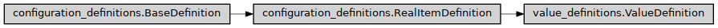

ValueDefinition
- class ase2sprkkr.common.value_definitions.ValueDefinition(name, type=None, default_value=None, default_value_from_container=None, written_name=None, alternative_names=None, fixed_value=None, required=None, init_by_default=False, result_is_visible=False, info=None, description=None, is_stored=None, is_hidden=False, is_optional=None, is_expert=False, is_numbered_array=False, is_repeated=False, is_always_added=None, name_in_grammar=None, name_format=None, expert=None, write_alternative_name=False, write_condition=None, condition=None, result_class=None)[source]
Class hierarchy
Constructor
- Parameters
is_numbered_array (bool) –
is_always_added (bool) –
write_alternative_name (bool) –
- __init__(name, type=None, default_value=None, default_value_from_container=None, written_name=None, alternative_names=None, fixed_value=None, required=None, init_by_default=False, result_is_visible=False, info=None, description=None, is_stored=None, is_hidden=False, is_optional=None, is_expert=False, is_numbered_array=False, is_repeated=False, is_always_added=None, name_in_grammar=None, name_format=None, expert=None, write_alternative_name=False, write_condition=None, condition=None, result_class=None)[source]
Definition of a configuration value.
- Parameters
name (str) – Name of the configuration value
type (Optional[GrammarType|mixed]) – Configuration value data type. If it is set to anyting what is not derived from GrammarType, the given value is used as the default value and the data type is derived from it. If it is None, the default value have to be set using
expertparameter.default (mixed) – Default value for the configuration option. Can accept callable (with option instance as an argument) - then the value will be determined at ‘runtime’ (possibly according to the other values of the section)
written_name (str) – Name of the configuration value in the input file
alternative_names (str or [str]) – Value can have an alternative name (that alternativelly denotes the value)
fixed_value (mixed) – If it is given, this option have a fixed_value value (provided by this parameter), that can not be changed by an user. #TODO - currently, callback (as in default_value) is not supported
required (bool) –
Required option can not be set to None (however, a required one can be still be optional, if it has a default values). If required = None, it is set to True if both the conditions are met:
the value is not expert
the optional is not True and the option has not a default_value
init_by_default (bool) – If the value is not set, init it by default
result_is_visible (bool) –
If True, the result (see the result property of
Option) assigned to the option is visible if the value is get as its default value - in this mode the result can be used as a kind of default value, specific for given configuration object.If False, the result is visible to the user just using the result property and it should be some transformation of the value of the object (e.g. relative path of the given absolute path, id of assigned object etc.)
is_stored (bool) – If True, the value is readed/writed from the output file. If None, set to False if the value is Generated.
is_optional (bool or None) – If True, the value can be omited, if fixed order in the section is required None means True just if required is False (or it is determined to be False), see the
requiredparameter.is_hidden (bool) – The value is hidden from the user (no container.name access to the value).
is_expert (Union[bool,mixed]) – Expert values are somewhat hidden (e.g. listed at end) from the user. Expert values are not exported to the result, if they are set to the default value.
is_numbered_array (bool) – Such values can contains (sparse) arrays. In the resulting ouput, the members of the array are in the form NAME1=…, NAME2=…, … The default value for missing number can appear in the form NAME=…
is_repeated – If True, the real type of the Value is array of values of the given type. The name-value pair is repeated for each value of the array.
is_always_added (bool) – If False, add the value, only if its value is not the default value. Default None means False for expert values, True for the others.
name_in_grammar (bool or None) – The value in the conf file is prefixed by <name><name_value_delimiter> If None, the default type value (type.name_in_grammar) is used
name_format (str or None) – The way how the name is written
expert (Optional[mixed]) – If not None, set
is_expertto True,default_valueto the given value andrequiredto False. Note, that alsotypecan be determined from such givendefault_value.write_alternative_name (bool) – Wheter use the name or the (first) alternative name in the output.
write_condition – If defined, write the value, only if write_condition(the option) is True.
condition –
- If defined, the condition
the condition.parse_condition() is invoked, when given grammar element should be parsed. If it is False, the element is skipped
the condition() is invoked, when the elements of the container is listed to hide the inactive members
result_class – Redefine the class that holds data for this option/section
- is_generated = False
- name_in_grammar = None
Is the name of the value/section present in the file?
When False, the option/section name is not written to the file at all. The value(s) of the option/section is/are then expected to be located in the file just after the previous one.
By default, all options and sections… are named (in the configuration file). However, the attribute can be redefined in instantiated objects and/or descendant classes to change the behavior.
- configuration_type_name = 'OPTION'
- type_from_type_map = {}
Redefine this in descendants, if you need to create different types that the defaults to be ‘guessed’ from the default values
- property is_independent_on_the_predecessor
Some value have to be positioned just after their predecessor in the output.
- enrich(option)[source]
The Option can be enriched by the definition, e.g. the docsting can be extended.
- property formated_name
- data_description(verbose=False, show_hidden=False, prefix='')[source]
Return the description of the contained data type and their type.
- Parameters
verbose (Union[bool, str]) – If
False, return only one-line string with a basic info. IfTrue, return more detailed informations. ‘verbose’ means here the same thing as Trueshow_hidden – If False`, do not show hidden members… which has no meaning for Values.
prefix (str) – The string, with with each line will begin (commonly the spaces for the indentation).
- additional_data_description(verbose=False, show_hidden=False, prefix='')[source]
Return the additional runtime-documentation for the configuration value. E.g. return the possible choices for the value, etc…
- Parameters
verbose – This parameter has no effect here. See
RealItemDefinition.data_description()for its explanation.show_hidden – This parameter has no effect here. See
RealItemDefinition.data_description()for its explanation.prefix (str) – Prefix for the indentation of the description.
- Returns
An additional description of the values accepted by this configuration option, retrieved from the documentation type.
- Return type
additional_data_description
- added_to_container(container)[source]
Hook called, when the object is assigned to the container (currently from the container constructor)
- property value_name_format
- _grammar_of_value(delimiter, allow_dangerous=False)[source]
Return grammar for the (possible optional) value pair
- property _grammar
Return the grammar. Descendants can redefine this method e.g. to allow not to generate the grammar at all. This method is implemented by property, that conditionaly returns the real method.
- Returns
func: callable Function to generate grammar or None if no grammar is returned
- _create_grammar(allow_dangerous=False, name_in_grammar=None, name_value_delimiter=None, original=False)[source]
Return a grammar for the name-value pair
- get_value(option=None)[source]
Return the default or fixed value of this option.
The function can accept the Option (which of the definition is): if the default value is given by callable, this argument is passed to it. (E.g. to set the default value using some properties obtained from the configuration objects.
- write(file, value, name_in_grammar=None, delimiter='')[source]
Write the option to the open file
- Parameters
file – The file to write to.
value – The value to write. It can be instance of DangerousValue, in such case It’s own type is used to write the value.
- write_value(file, value, delimiter='')[source]
Write given value and a given delimiter before the value to a file
- property can_be_repeated
bool(x) -> bool
Returns True when the argument x is true, False otherwise. The builtins True and False are the only two instances of the class bool. The class bool is a subclass of the class int, and cannot be subclassed.
- _get_copy_args()[source]
Compute the dictionary that defines the attributes to create a copy of this object.
- Returns
copy – The returning dictionary has this structure: { name of the argument of the __init__ function : name of the object attribute }
- Return type
Dict
- _copy_excluded_args = ['container', 'grammar_hooks', 'expert', 'fixed_value', 'result_is_visible', 'default_value_from_container']